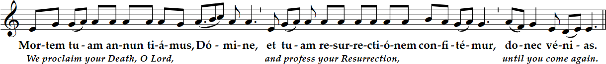
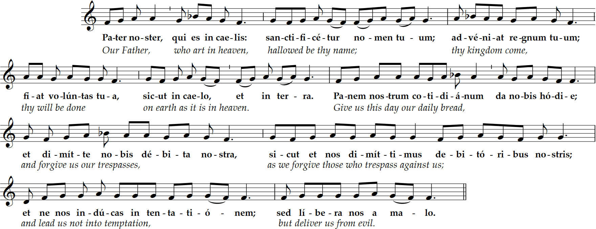

Thirtieth Sunday in Ordinary Time
6 PM Mass
Thirtieth Sunday in Ordinary Time
6 PM Mass
Prelude “Fugue in G Minor” J.-J. Charpentier (1734-1794)
Let the hearts of those who seek the Lord rejoice; seek the Lord and be strengthened; seek his face for evermore.


Thus says the LORD: "You shall not molest or oppress an alien, for you were once aliens yourselves in the land of Egypt. You shall not wrong any widow or orphan. If ever you wrong them and they cry out to me, I will surely hear their cry. My wrath will flare up, and I will kill you with the sword; then your own wives will be widows, and your children orphans. "If you lend money to one of your poor neighbors among my people, you shall not act like an extortioner toward him by demanding interest from him. If you take your neighbor's cloak as a pledge, you shall return it to him before sunset; for this cloak of his is the only covering he has for his body. What else has he to sleep in? If he cries out to me, I will hear him; for I am compassionate."
Brothers and sisters: You know what sort of people we were among you for your sake. And you became imitators of us and of the Lord, receiving the word in great affliction, with joy from the Holy Spirit, so that you became a model for all the believers in Macedonia and in Achaia. For from you the word of the Lord has sounded forth not only in Macedonia and in Achaia, but in every place your faith in God has gone forth, so that we have no need to say anything. For they themselves openly declare about us what sort of reception we had among you, and how you turned to God from idols to serve the living and true God and to await his Son from heaven, whom he raised from the dead, Jesus, who delivers us from the coming wrath.
When the Pharisees heard that Jesus
had silenced the Sadducees,
they gathered together, and one of them,
a scholar of the law tested him by asking,
"Teacher, which commandment
in the law is the greatest?"
He said to him,
"You shall love the Lord, your God,
with all your heart,
with all your soul,
and with all your mind.
This is the greatest and the first commandment.
The second is like it:
You shall love your neighbor as yourself.
The whole law and the prophets
depend on these two commandments."
Homily + Profession of Faith
I believe in one God, the Father almighty,
maker of heaven and earth,
of all things visible and invisible.
I believe in one Lord Jesus Christ,
the Only Begotten Son of God,
born of the Father before all ages.
God from God, Light from Light, true God from true God,
begotten, not made, consubstantial with the Father;
through him all things were made.
For us men and for our salvation he came down from heaven,
and by the Holy Spirit was incarnate of the Virgin Mary,
and became man.
For our sake he was crucified under Pontius Pilate,
he suffered death and was buried,
and rose again on the third day
in accordance with the Scriptures.
He ascended into heaven
and is seated at the right hand of the Father.
He will come again in glory to judge the living and the dead
and his kingdom will have no end.
I believe in the Holy Spirit, the Lord, the giver of life,
who proceeds from the Father and the Son,
who with the Father and the Son is adored and glorified,
who has spoken through the prophets.
I believe in one, holy, catholic and apostolic Church.
I confess one Baptism for the forgiveness of sins
and I look forward to the resurrection of the dead
and the life of the world to come. Amen.
Prayer of the Faithful + Offertory + Liturgy of the Eucharist
“O Lord, grant me life according to your word, so that I may learn your commandments..”
May the Lord accept the sacrifice at your hands,
for the praise and glory of his name, for our good, and the good of all his holy Church.



Deliver us Lord from every evil, graciously grant peace in our day, that by the help of your mercy we may be always free from sin
and safe from all distress, as we await the blessed hope, and the coming of our Savior, Jesus Christ.

Lord, I am not worthy that you should enter under my roof, but only say the word and my soul shall be healed.

1. So be imitators of God, as beloved children,
and live in love.
---
2. For you were once darkness,
but now you are light in the Lord.
---
3. Live as children of light,
for light produces every kind of
goodness and righteousness and truth.
O saving Victim, opening wide The gate of heaven to man below! Our foes press on from every side;Thine aid supply, thy strength bestow. To Thy great name be endless praise, Immortal Godhead, One in Three; Oh, grant us endless length of days, In our true native land with Thee. Amen.

Queen, mother of mercy: our life, sweetness, and hope, hail. To thee do we cry, poor banished children of Eve.
To you we sigh, mourning and weeping in this va ley of tears.
Turn then, our advocate, those merciful eyes toward us. And Jesus, the blessed fruit of thy womb, after our exile, show us.
O clement, O loving, O sweet Virgin Mary
"St. Michael the Archangel, defend us in battle. Be our protection against the wickedness and snares of the devil.
May God rebuke him, we humbly pray; and do thou, O Prince of the heavenly hosts, by the power of God,
cast into hell Satan and all the evil spirits who prowl about the world seeking the ruin of souls. Amen."
Postlude “Symphony in C (K.551) - IV (excerpt)” W. A. Mozart (1756-1792)